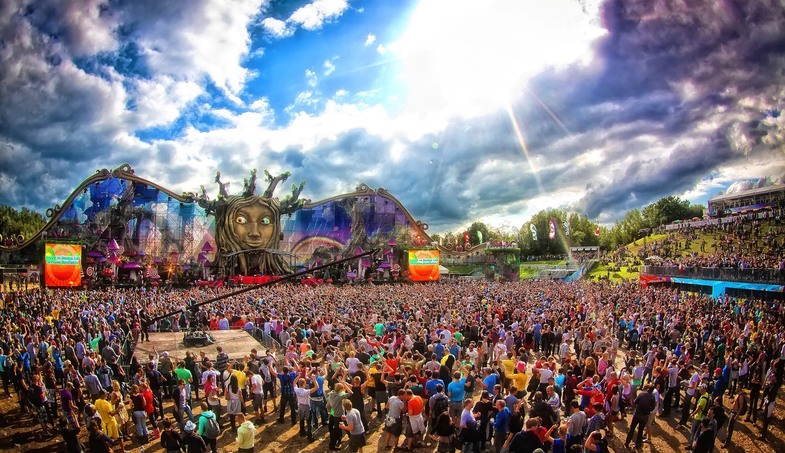

<div id="slider" class="carousel slide" data-ride="carousel">
  <!-- INDICADORES IMAGENES -->
  <ol class="carousel-indicators">
    <li data-target="#slider" data-slide-to="0" class="active"></li>
    <li data-target="#slider" data-slide-to="1"></li>
    <li data-target="#slider" data-slide-to="2"></li>
    <li data-target="#slider" data-slide-to="3"></li>
    <li data-target="#slider" data-slide-to="0"></li>
  </ol>

  <!-- CAPAS DE SLIDER POR IMAGEN -->
  <div class="carousel-inner">
    
    <div class="item active">
      
    </div>

    <div class="item">
      
    </div>

    <div class="item">
      
    </div>

    <div class="item">
      
    </div>

    <div class="item">
      
    </div>

  </div>

  <!-- CONTROLES DERECHA Y IZQUIERDA -->
  <a class="left carousel-control" href="#slider" data-slide="prev">
    <span class="glyphicon glyphicon-chevron-left"></span>
    <span class="sr-only">Previous</span>
  </a>
  <a class="right carousel-control" href="#slider" data-slide="next">
    <span class="glyphicon glyphicon-chevron-right"></span>
    <span class="sr-only">Next</span>
  </a>

</div>